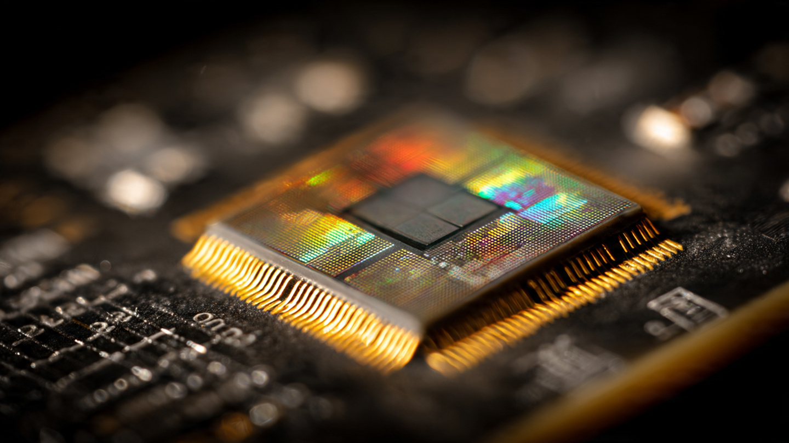

500 Kilowatts in One Liter: How Silicon Carbide Inverters Are Rewriting EV Power Electronics

Every electric vehicle contains a component that most owners never think about. Between the battery pack and the electric motor sits the inverter, a power electronics module that converts direct current from the battery into the alternating current that spins the motor. It does this thousands of times per second. Its efficiency determines how much of the battery's stored energy reaches the wheels and how much becomes waste heat. Its size and weight affect packaging, cooling system demands, and vehicle architecture. For the past decade, most production EV inverters have relied on silicon insulated-gate bipolar transistors, known as IGBTs, to handle this conversion. Silicon IGBTs evolved from bipolar junction transistors through decades of incremental refinement, and they work well enough. But "well enough" has a ceiling, and the industry is hitting it.
On May 7, 2026, Fraunhofer IZM in Berlin published results from a project commissioned by Mitsubishi Heavy Industries: a silicon carbide inverter that delivers 500 kilowatts from a single liter of volume at 99 percent efficiency. For context, a typical production EV inverter occupies 3 to 5 liters and produces 100 to 200 kilowatts at 94 to 97 percent efficiency. Fraunhofer's prototype is roughly five times more powerful than most current alternatives in a fraction of the space. It represents 2.5 times the previous volumetric power density record. Numbers like these do not emerge from incremental changes to existing silicon technology. They require a different semiconductor.
Why Silicon Carbide
Silicon has a bandgap of 1.12 electron volts, meaning it takes 1.12 eV of energy to move an electron from the valence band to the conduction band. Silicon carbide's bandgap measures 3.26 eV, nearly three times wider. A wider bandgap translates directly into higher breakdown voltage, higher operating temperature, and faster switching speed per unit area of semiconductor die.
In practical terms, a SiC MOSFET can operate at junction temperatures up to 200 degrees Celsius, compared to 150 degrees for most silicon IGBTs. It can switch at frequencies exceeding 100 kHz, while silicon IGBTs in automotive inverters typically operate between 8 and 20 kHz. Faster switching reduces the energy lost during each on-off transition, and SiC cuts those switching losses by up to 60 percent. Across a complete drive cycle, this efficiency gain adds up to 1.5 to 3 percentage points of total drivetrain efficiency, which translates to 5 to 8 percent more driving range per charge.
Range gains alone justify the material change for most automakers. But the secondary effects matter as much. Higher switching frequencies allow smaller passive components: the inductors and capacitors that filter electrical noise can shrink because they operate at higher frequencies. Higher operating temperatures reduce cooling system demands, enabling smaller radiators, less coolant volume, and lighter thermal management hardware. Every kilogram saved compounds through the vehicle's structural requirements. A lighter inverter needs a lighter mounting bracket, which needs less structure to support it, which needs a slightly smaller battery to achieve the same range target.
Researchers at Los Alamos National Laboratory theorized SiC's potential for power electronics in the 1980s. Manufacturing was the obstacle. Growing defect-free silicon carbide crystals proved enormously difficult because SiC does not melt under practical conditions; it sublimes directly from solid to gas at approximately 2,700 degrees Celsius. Producing usable wafers required vapor deposition techniques that evolved slowly through the 1990s and 2000s. Only in the past five years has wafer quality and yield reached the point where automotive-grade SiC devices can be produced at scale.
Fraunhofer's Four Tricks
Building a 500 kW inverter is straightforward if size does not matter. Fitting one into a single liter required Fraunhofer IZM to solve four problems simultaneously: semiconductor packaging, thermal management, electrical interconnection, and passive component density.
First, the semiconductors. Fraunhofer embedded 12 SiC MOSFETs directly into the printed circuit board, four per phase in a three-phase configuration. Conventional inverter designs mount discrete transistor modules onto a substrate, then connect them with wire bonds or ribbon bonds to a separate PCB. Each connection adds parasitic inductance, which causes voltage spikes during switching and limits how fast the transistors can turn on and off. By embedding the MOSFETs directly into the PCB substrate, Fraunhofer reduced parasitic inductance to approximately 1 nanohenry. At that level, the transistors can switch at 63 volts per nanosecond without destructive voltage overshoot.
Second, cooling. Fraunhofer uses extruded aluminum heat sinks with more than 40 corrugated fins per cooler, produced in a single extrusion step. Extrusion is a mature, inexpensive manufacturing process: push heated aluminum through a shaped die and cut the result to length. No machining, no brazing, no assembly of separate fin structures. Each corrugated fin presents more surface area per unit length than a straight fin, and the turbulence generated by the corrugation improves convective heat transfer. Mounting the coolers directly against the PCB-embedded MOSFETs eliminates the thermal interface layers that conventional designs stack between die, substrate, baseplate, thermal paste, and heat sink.
Third, busbars. In conventional inverter assemblies, power conductors connect with screws. Each screw joint introduces contact resistance, occupies space, and creates a potential failure point under thermal cycling and vibration. Fraunhofer laser-welded the busbars instead, producing continuous metallic joints with lower resistance and zero fastener overhead. Arranging the busbars in a vertically stacked configuration enables magnetic field cancellation between the positive and negative DC conductors, further reducing parasitic inductance in the power loop.
Fourth, capacitors. DC-link capacitors in an inverter smooth the voltage ripple between the battery and the switching transistors. Conventional film capacitors are often the largest single component in an inverter. Fraunhofer selected PolyCharge NanoLam capacitors, a multilayer polymer technology that achieves 300 microfarads at just 2 nanohenries of parasitic inductance. Copper contacts on the NanoLam capacitors enable direct soldering to the busbar assembly. These capacitors tolerate operating temperatures up to 130 degrees Celsius, which allows them to sit closer to the heat-generating MOSFETs without derating.
None of these four solutions is individually revolutionary. PCB-embedded power devices, extruded coolers, laser-welded busbars, and advanced capacitors all exist in other contexts. What Fraunhofer demonstrated is that combining all four in a single integrated assembly produces a result that exceeds the sum of the individual improvements. Parasitic inductance below 3 nanohenries across the entire power loop. Thermal resistance low enough to dissipate 5 kilowatts of waste heat from a 1-liter volume. Switching speeds that would destroy a conventional wire-bonded module.
Who Uses SiC in Production
Porsche was first. When the Taycan launched in 2019, it carried the first production 800-volt SiC inverter architecture in an automobile. Porsche's engineering rationale was specific: 800 volts halves the current compared to 400 volts for the same power, enabling thinner cables, smaller connectors, and reduced resistive losses throughout the high-voltage system. SiC transistors made the 800-volt architecture practical because they handle the higher voltage with substantially less leakage current than silicon alternatives.
Tesla adopted SiC MOSFETs for the main inverter in the Model 3, then expanded the approach across the Model S, X, and Y. Rather than moving to 800 volts, Tesla optimized its 400-volt architecture around SiC's efficiency advantages, extracting range gains without redesigning the entire high-voltage system. In early 2023, Tesla indicated plans to reduce SiC content per vehicle by 75 percent in next-generation platforms, citing cost concerns. This generated headlines about Tesla "abandoning" SiC, but the reality is more nuanced: reducing SiC die area per inverter while maintaining performance through better packaging and circuit design. Less material, not less technology.
Hyundai's E-GMP platform, underpinning the Ioniq 5, Ioniq 6, and EV6, uses 800-volt SiC power electronics. The EV6 GT pairs an onsemi EliteSiC power module with dual motors for a combined 576 horsepower, 0-60 mph in 3.4 seconds, and a claimed 5 percent range improvement over a hypothetical silicon IGBT version of the same drivetrain. GM partnered with Wolfspeed to supply SiC devices for its Ultium Drive units, and Rivian's Gen 2 platform in the newly-launched R2 incorporates SiC inverter technology as well.
Supply Chain: From Wafer to Wheel
SiC's supply chain remains more constrained than silicon's. Growing SiC boules (the cylindrical crystals from which wafers are sliced) takes roughly 7 to 10 days per boule compared to hours for silicon. Defect rates are higher. Wafer sizes are smaller: the industry is transitioning from 150 mm to 200 mm SiC wafers, while silicon power devices routinely use 300 mm wafers. Each of these factors increases cost per die.
Onsemi has pursued vertical integration aggressively, controlling the process from raw SiC powder through crystal growth, wafer fabrication, and device packaging. Its M3e MOSFET generation claims 50 percent lower turn-off losses than previous generations, a metric that directly reduces switching energy in inverter applications. Wolfspeed supplies 150 mm SiC wafers to STMicroelectronics under a $250 million long-term agreement and is ramping its own 200 mm wafer production at a new facility in Siler City, North Carolina. Magna International invested $40 million in SiC power module capabilities, positioning itself to supply complete inverter assemblies to automakers who prefer to buy rather than build.
Market projections from multiple analyst firms converge on similar numbers: SiC power device revenue in automotive applications growing from roughly $1.2 billion in 2025 to $6.8 billion by 2033. Nearly all of that growth comes from traction inverters. Onboard chargers and DC-DC converters also benefit from SiC, but the inverter represents the largest single opportunity because it processes the most power.
800 Volts and Beyond
Voltage is the lever that SiC unlocks most dramatically. At 400 volts, a 300 kW motor draws 750 amps. At 800 volts, the same motor draws 375 amps. Half the current means half the resistive losses (which scale with the square of current, so actually one-quarter the I²R heating in conductors). It also means thinner cables, which weigh less and cost less copper. Smaller contactors and fuses. Reduced thermal load on connectors and terminals. Every current-carrying component in the vehicle benefits.
Porsche and Hyundai pioneered 800-volt production architectures. Audi, Mercedes, and Kia have followed. Some manufacturers are exploring 900-volt or even 1,200-volt systems for commercial vehicles and heavy trucks, where the power demands are even greater and the weight savings from reduced conductor size more consequential. SiC's breakdown voltage characteristics support these higher voltages with minimal additional design complexity, while silicon IGBTs require series-stacking of devices that increases losses and control difficulty.
Charging speed also improves. An 800-volt battery can accept a given power level at half the current of a 400-volt battery, reducing heat generation inside the battery cells during fast charging. Porsche demonstrated 270 kW peak charging rates on the Taycan; Hyundai achieved 240 kW on the Ioniq 5. Both figures depend partly on the SiC-enabled 800-volt architecture of the onboard power electronics.
What SiC Does Not Solve
A more efficient inverter does not fix battery chemistry. Lithium-ion cells still degrade over charge cycles regardless of how efficiently the inverter converts their output. Energy density remains governed by cathode and anode materials, not by the power electronics downstream. An inverter operating at 99 percent efficiency versus 95 percent efficiency adds perhaps 15 to 20 miles of range on a 300-mile EV. Meaningful, but not transformative for range anxiety.
Motor design also sits outside the inverter's influence. Permanent magnet motors, induction motors, and wound-rotor synchronous motors each have their own efficiency curves, torque characteristics, and rare-earth dependencies. SiC's faster switching frequencies can improve motor control resolution, enabling more precise torque delivery and slightly better efficiency at partial loads. But the fundamental motor topology decisions are independent of the inverter semiconductor.
Charging infrastructure remains the most visible constraint on EV adoption, and inverter technology has no bearing on the availability of public fast chargers, grid capacity at charging sites, or the economics of building charging networks. A vehicle with a 99-percent-efficient SiC inverter still needs somewhere to plug in.
Cost is the persistent counterargument. SiC wafers cost roughly three to five times more than equivalently sized silicon wafers. Device processing requires higher temperatures and specialized equipment. As wafer sizes increase and crystal growth techniques mature, costs are declining, but SiC devices will remain more expensive than silicon for at least the next several years. Every automaker running SiC in production has made an explicit calculation that the efficiency and packaging benefits justify the material premium. Not all agree: some manufacturers continue to develop improved silicon IGBT designs with advanced packaging techniques that narrow the performance gap at lower cost.
From Laboratory to Liter
Fraunhofer IZM's 500 kW demonstrator will not appear in a production car next year. Research prototypes operate under controlled conditions with optimized cooling, laboratory-grade power supplies, and no vibration, temperature cycling, or 15-year durability requirements. Translating a laboratory result into an automotive-qualified component typically takes 3 to 5 years of validation, testing, and design-for-manufacturing iteration.
What the demonstrator proves is where the ceiling sits. Five hundred kilowatts per liter at 99 percent efficiency establishes a benchmark that production engineering can pursue. Current production SiC inverters deliver roughly 30 to 50 kilowatts per liter. Even reaching half of Fraunhofer's density in a production-qualified design would represent a massive improvement, enabling significantly smaller, lighter inverters that free up packaging space for batteries, passenger volume, or structural reinforcement.
Silicon carbide was theorized as a power semiconductor material four decades ago. It took most of that time to solve the manufacturing problems. Now that wafer quality, device design, and packaging techniques have converged, the pace of improvement is accelerating. Fraunhofer's four tricks, embedding MOSFETs in PCBs, extruding corrugated coolers, laser-welding busbars, and deploying NanoLam capacitors, are individually mundane. Combined, they produce something that would have been physically impossible five years ago.
Between the battery and the motor, one liter of silicon carbide, aluminum, copper, and polymer now handles 500 kilowatts with 1 percent loss. Brute electrical force, disciplined thermal management, and a crystal structure that nature made hard to grow but very good at switching. Power electronics rarely generate headlines. They probably should.
Sources
- Fraunhofer IZM, “500 kW SiC Inverter Demonstrator,” press release, May 7, 2026.
- onsemi, “EliteSiC M3e MOSFET Technology Overview,” onsemi.com, 2025.
- Wolfspeed, “150mm SiC Wafer Supply Agreement with STMicroelectronics,” investor relations, 2023.
- Porsche AG, “Taycan Engineering: 800-Volt Architecture,” newsroom.porsche.com.
- Hyundai Motor Group, “E-GMP Platform Technical Overview,” hyundaimotorgroup.com.
- PolyCharge, “NanoLam High-Temperature DC-Link Capacitor Specifications,” polycharge.com.
- Yole Group, “SiC Power Device Market Report 2025-2033,” yolegroup.com.
- Magna International, “SiC Power Electronics Investment Announcement,” magna.com, 2024.